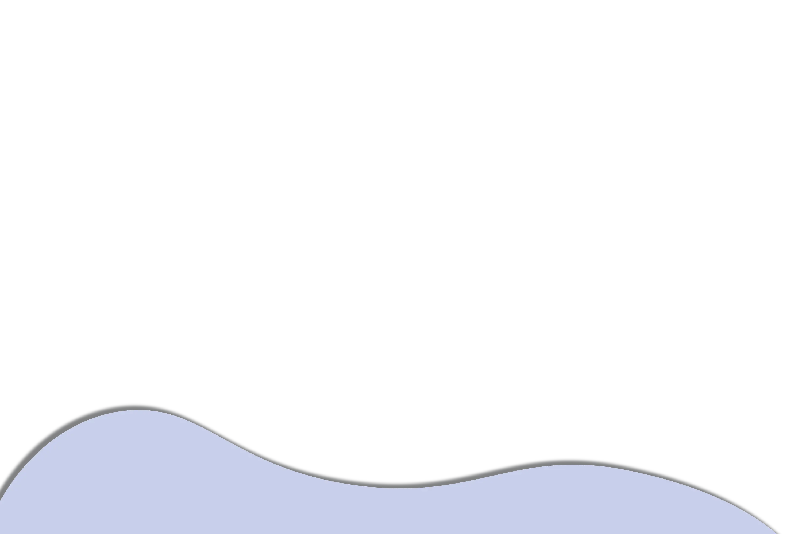
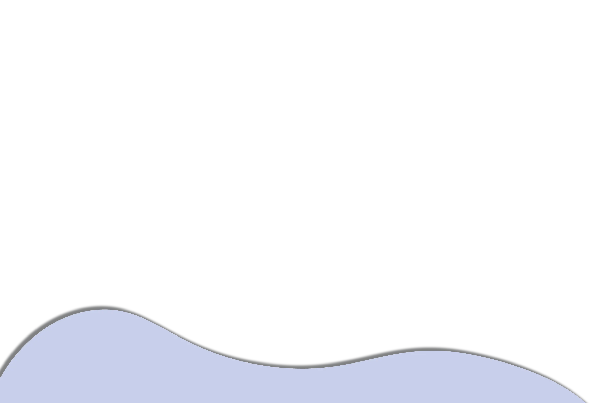

The original town of Taal was founded in the area of Balangon in 1572. Due to the frequent eruptions of the Taal Volcano, the whole town of old Taal was devastated that the town was moved to its present location.
It became the capital in 1732, so the entire province was named after it. The Taal Volcano, which is the smallest in the world, sits in the middle of Taal Lake and its crater has a lake of its own.
 Back
Back

 
